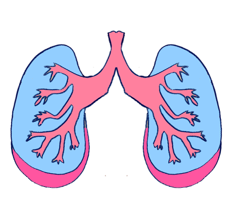
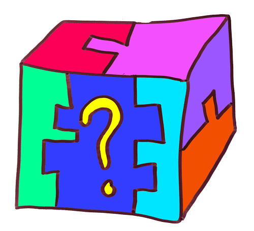

The Game Center:
Day One - Why am I here?
Well I’m here. Alone in New York City. Being paid to make art.
I feel like my chest is expanding, I’m breathing in and I might breathe in the entire world. Something is coming. I feel it coming on, coming from within and totally unstoppable. It’s been a strange year.
It's the first day of my residency at NYU's Game Center and I'm ruminating on why I make games even though I don't like playing games.
I know how precious it is, my spot here. How a long list of things outside my control colluded with a few things inside my control to open a door somewhere. Inside that door someone did me a kindness.

Now I sit in this chair. I want to look at this moment plainly. My entitlement is insidious, creeping in through insecurity and ignorance and guiding me around like an invisible handler.
Today was the first day of my residency. At the orientation each new undergraduate named the last game they played, and people murmured appreciatively or cheered. I had never heard of most of the games. I kept hoping that one person would say something like “make-believe” or talk about a jumping game they played on their walk to school.
I don’t really play games. Well, I play them, but not for fun. Playing games is research, it's work. I find tiny spots of joy in games: a mechanic that satisfies some deep bone-itch, a thrill, an analogous catharsis. But games don’t draw me in. I’m not thrilled and racing towards games, breathless with hot blood rushing in my ears.
I’m holding them in my hands delicately, like puzzle boxes from another planet.
Here are a few things I run into when I try to play games for fun:
- Competition, a key driver in most games, is anti-motivational for me. Yes I feel it, yes I want to win. But if anyone loses I feel like I lost.
- Completion of all-the-things can drive me through a game, but I leave feeling hollow hearted and betrayed.
- Why master something in play? Doesn’t this seem like work? I enjoy work, but would like to either a) get paid or b) choose what I am doing.
- Choices in games often feel arbitrary or meaningless. Why follow a bread trail to another bread trail to an end screen? Why would I do that when I could sit here eating real bread and watching the sunbeams move?
- Stories are rarely written for people like me. I hear this is changing? Also, the emotional volume is either off or aggressively cranked up to full blast. I get overstimulated and fall out of the plot.
I’d almost always rather be sitting under the tree drinking tea with you, wandering by the water and daydreaming, or making weird art in the wider world outside.
Anyway, that’s why I make games as an art practice. I make games because I don't like playing games. I believe there are entire universes outside what’s been done so far, and some of them might even fit someone like me, or you.
We might as well take a look, anyway.
M